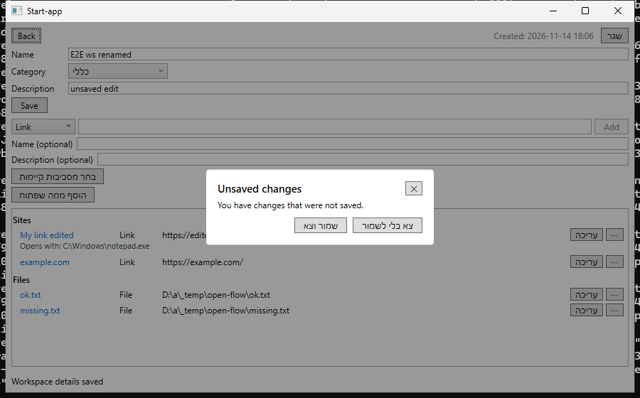

Benutzerhandbuch
Führung Start-app
Schritt für Schritt: Arbeitsbereich erstellen, Elemente hinzufügen, erfassen, starten und speichern - mit echten Screenshots der Anwendung und mit den Einschränkungen, die es zu wissen gilt.
Ein Evaluierungsprototyp, keine stabile Version
Version der Anleitung: 0.1.0-proto.1
Keine Episoden gefunden. Versuchen Sie es mit einem anderen Wort oder löschen Sie die Suche.
Was ist das Start-app
Start-app Speichert Programme, Ordner, Dateien und Links unter einem Umgebungsnamen. Wenn Sie den Computer das nächste Mal öffnen, öffnet der Befehl „Ausführen“ alle Elemente zusammen, ohne jedes einzelne erneut auszuwählen.
Dieser Leitfaden begleitet den gesamten Weg: den Hauptbildschirm, das Erstellen einer Umgebung, das manuelle Hinzufügen von Elementen oder durch Erfassen, Bearbeiten, Starten und Speichern. Kapitel Bekannte Einschränkungen Zentralisieren Sie an einem Ort alles, was die Anwendung nicht tut.
System- und Installationsanforderungen
Das Verpackungsziel ist Windows x64. Es gibt keine verifizierte Mac- oder Linux-Version.
Der Download der Version, die diese Anleitung beschreibt, 0.1.0-proto.1, befindet sich in der Versionsliste auf der Startseite. Der Download erfolgt nur dort, nicht von der Anleitungsseite.
Aktivierung nach Download
Der Download ist eine ZIP-Datei, kein Installationsprogramm. Nach dem Herunterladen:
- Extrahieren Sie alle Dateien aus der ZIP-Datei in einen Ordner.
- Öffnen Sie den extrahierten Ordner und führen Sie den aus
StartApp.App.exe. - Belassen Sie die DLL- und Laufzeitdateien im Ordner neben der Datei.
Die Anwendung beinhaltet ihre Laufzeitumgebung, sodass .NET nicht separat installiert werden muss. Keine Registrierung, kein Konto oder Login. Die Daten werden in einer lokalen Datei gespeichert%LOCALAPPDATA%\StartApp\store.json.
Was wurde getestet: Dieser Prototyp wurde als eigenständige Windows x64-Anwendung erstellt und erfolgreich auf einem gehosteten Windows Server 2025-Server gestartet und heruntergefahren. Nicht unabhängig getestet unter Windows 11 zu Hause, und es gibt keine Verpflichtung zur Mindestversion von Windows. Es gibt keine Garantie dafür, dass keine Sicherheitswarnungen oder Antivirensoftware-Warnungen angezeigt werden.
Der Hauptbildschirm: die Umgebungsansicht
Oben auf dem Bildschirm befindet sich die Liste der Umgebungen. Jede Umgebungskarte zeigt den Namen, die Beschreibung, die Kategorie, die gewählte Farbe und das Kartenbild sowie den Erstellungszeitpunkt und den Zeitpunkt des letzten Öffnens. Der Zeitpunkt des letzten Öffnens wird beim Starten einer Umgebung aktualisiert, nicht beim Öffnen eines einzelnen Elements.
Jede Karte hat eine Schaltfläche „Starten“ und ein Menü „...“ mit weiteren Aktionen. Unter der Liste befindet sich ein Formular zum Erstellen einer neuen Umgebung. In der Ecke führt ein Zugang zur Erfassungsansicht.

Eine neue Arbeitsumgebung schaffen
Im Erstellungsformular ist der Name erforderlich. Die Standardkategorie ist „Allgemein“. Sie können eine Kartenfarbe und ein Bild auswählen. Die Beschreibung ist optional. Nach dem Speichern erscheint eine Bestätigung, dass die Angaben gespeichert wurden.

Wenn Sie versuchen, eine Umgebung zu starten, die noch keine Elemente enthält, wird eine Meldung angezeigt, die Sie zu den Details der Umgebung weiterleitet, um Elemente hinzuzufügen.

Elemente manuell hinzufügen
Fügen Sie im Bildschirm mit den Umgebungsdetails Elemente von vier Typen hinzu: Site, Datei, Ordner und Software. Jeder Artikel kann mit einem eigenen Namen und einer eigenen Beschreibung versehen werden. Lokale Pfade erfordern einen vollständigen Windows-Pfad und keinen kurzen Software-Alias.

Die Elemente werden auf dem Bildschirm nach Typ gruppiert: Websites, Ordner, Dateien und Software. Jede Zeile verfügt über eine Schaltfläche zum Bearbeiten und ein Aktionsmenü.

Erfassung: Scannen, Auswählen und Duplizieren
Die Erfassung scannt, was gerade geöffnet ist: Programme und den Windows-Datei-Explorer sowie im Browser die Adressleiste. Die Browserquelle kennt Chrome, Edge und Brave; Derzeit gibt es keine vollständige Kompatibilitätsmatrix für jeden Browser und jede Version. Der Scan kann bis zu 10 Sekunden dauern.
Die Ergebnisse werden vor dem Speichern zur Auswahl angezeigt. Sie können daraus eine neue Umgebung erstellen oder sie zu einer bestehenden Umgebung hinzufügen - mit einer Suche, die sie findet.

Beim Erstellen einer neuen Umgebung werden die Elemente standardmäßig überprüft. Beim Hinzufügen zu einer bestehenden Umgebung: Ohne Markierungen lautet die Aktion „Alle hinzufügen“ und mit Markierungen „Ausgewählte hinzufügen“. Vervielfältigungen gegenüber dem, was bereits in der Umgebung gespeichert ist, bedürfen einer Genehmigung. Nebeneinander hinzugefügte Bildschirme bleiben temporär, bis Sie auf „Speichern“ klicken.

Eine erfasste Site speichert auch den Browser, von dem aus sie gefunden wurde, sofern sie identifiziert werden kann.

Bearbeitungsumgebung und Elemente
Das Menü „…“ einer Umgebungskarte bietet Folgendes: Anzeigen, Starten, Element hinzufügen, Karte formatieren und Kategorie bearbeiten.

Wählen Sie beim Gestalten einer Karte eine Farbe und ein Hintergrundbild. Für jedes Element können Sie den Namen, die Beschreibung und die Adresse bearbeiten, eine Adresse kopieren, in der Liste verschieben oder aus der aktuellen Umgebung entfernen. „Öffnen mit“ wird im darin enthaltenen Element gespeichert Start-app nur, ohne die Standardzuordnungen in Windows zu ändern.

Wenn Sie die Bearbeitung mit nicht gespeicherten Änderungen beenden, wird eine Warnung angezeigt: Speichern und beenden, ohne Speichern beenden oder zur Bearbeitung zurückkehren.

Starten Sie die Umgebung und testen Sie sie vor dem Öffnen
Der Befehl „Ausführen“ prüft die Elemente vor dem Öffnen und trennt Elemente, die bereit sind, fehlen, nicht unterstützt werden, nicht verfügbar sind oder einer Entscheidung bedürfen. Punkte, die einer Entscheidung bedürfen, erhalten keine allgemeine Umgehung. Links werden nur in http/https geöffnet und die Software erfordert einen vollständigen Pfad.

Nach der Bestätigung sendet die Anwendung eine Aufforderung an Windows, jedes Element zu öffnen. Es ist wichtig zu verstehen, was das bedeutet: Eine gesendete Anfrage ist kein Beweis dafür, dass das gewünschte Fenster tatsächlich geöffnet wurde. Die App kann auch nicht zuverlässig erkennen, ob der genaue Artikel bereits geöffnet ist, sodass beim erneuten Öffnen möglicherweise Duplikate entstehen. Ein Element, dessen Datei nicht gefunden wird, schlägt mit der Meldung „Datei nicht gefunden“ fehl.
Bekannte Einschränkungen
- Es gibt keine automatische Identifizierung des Dokuments, das innerhalb der Software geöffnet wird; Eine geöffnete Software ist kein Beweis dafür, dass eine bestimmte Datei darin geöffnet ist. Dokumente werden manuell hinzugefügt.
- Es gibt keine Garantie für die Wiederherstellung nicht gespeicherter Inhalte oder der Fensterplatzierung.
- „bereits geöffnet“ ist nicht zuverlässig bekannt; Beim erneuten Öffnen können Duplikate entstehen.
- Die Erfassung kann offen zwischen Registerkarten wechseln, um Adressen zu lesen.
- Ein unvollständiges Erfassungsergebnis oder eine leere Liste bedeuten nicht, dass nichts offen ist.
- In der Schnittstelle gibt es keinen Vorgang zum Löschen der Umgebung. Sie können Elemente aus einer Umgebung entfernen, nicht jedoch eine gesamte Umgebung löschen.
- „Mit einer anderen Umgebung teilen“ wird möglicherweise angezeigt, ist aber inaktiv.
Speichern und lokaler Speicher
Im aktuellen Projektdesign werden die Arbeitsbereiche in einer lokalen Datei auf dem Computer gespeichert: %LOCALAPPDATA%\StartApp\store.json. Änderungen werden nur gespeichert, wenn Sie explizit auf Speichern klicken.
Privatsphäre auf den Punkt gebracht
Im aktuellen Design werden die Daten der Umgebungen lokal auf dem Computer gespeichert. Durch das Öffnen eines Links oder einer Software entsteht die übliche Kommunikation dieses Ziels - beispielsweise führt das Öffnen einer Website in einem Browser zu dieser Website.
Diese Website selbst enthält keine Formulare, Analysen, Remote-Schriftarten oder Dienste Dritter.
häufig gestellte Fragen
Was Start-app tun?
Speichert Programme, Ordner, Dateien und Links unter einem Umgebungsnamen und öffnet sie alle zusammen mit dem Befehl „Ausführen“.
Wird alles wieder so sein, wie es war?
Nicht garantiert. Es gibt keine automatische Erfassung von Dokumenten, die in Programmen geöffnet sind, keine Wiederherstellung nicht gespeicherter Inhalte oder die Zusage einer Fensterplatzierung. Beim Öffnen handelt es sich um eine Anfrage an das Betriebssystem mit vorläufigen Prüfungen und Berichten.
Wie fügt man ein Dokument hinzu, das in einer Software geöffnet ist?
Manuell: Fügen Sie die Datei selbst als Dateitypelement in den Umgebungsdetails hinzu. Das Capture erkennt es von alleine nicht an der geöffneten Software.
Wo werden die Informationen gespeichert?
in einer lokalen Datei auf dem Computer. Details im Kapitel Speichern und lokaler Speicher.